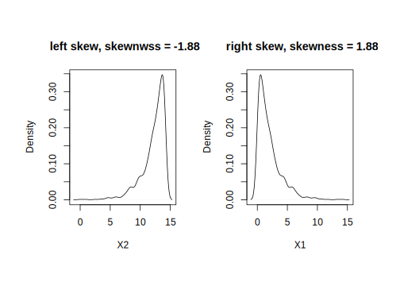

5.5 Resolve Outliers
Even under certain assumptions we can statistically define outliers, it can be hard to define in some situations. Box plot, histogram and some other basic visualizations can be used to initially check whether there are outliers. For example, we can visualize numerical non-survey variables in sim.dat:
# select numerical non-survey data
sdat <- subset(sim.dat, select = c("age", "income", "store_exp",
"online_exp", "store_trans", "online_trans"))
# use scatterplotMatrix() function from car package
par(oma = c(2, 2, 1, 2))
scatterplotMatrix(sdat, diagonal = "boxplot", smoother = FALSE)
It is also easy to observe the pair relationship from the plot. age is negatively correlated with online_trans but positively correlated with store_trans. It seems that older people tend to purchase from the local store. The amount of expense is positively correlated with income. Scatterplot matrix like this can reveal lots of information before modeling.
In addition to visualization, there are some statistical methods to define outliers, such as the commonly used Z-score. The Z-score for variable \(\mathbf{Y}\) is defined as:
\[Z_{i}=\frac{Y_{i}-\bar{Y}}{s}\]
where \(\bar{Y}\) and \(s\) are mean and standard deviation for \(Y\). Z-score is a measurement of the distance between each observation and the mean. This method may be misleading, especially when the sample size is small. Iglewicz and Hoaglin proposed to use the modified Z-score to determine the outlier(Iglewicz and Hoaglin 1993)：
\[M_{i}=\frac{0.6745(Y_{i}-\bar{Y})}{MAD}\]
Where MAD is the median of a series of \(|Y_ {i} - \bar{Y}|\), called the median of the absolute dispersion. Iglewicz and Hoaglin suggest that the points with the Z-score greater than 3.5 corrected above are possible outliers. Let’s apply it to income:
# calculate median of the absolute dispersion for income
ymad <- mad(na.omit(sdat$income))
# calculate z-score
zs <- (sdat$income - mean(na.omit(sdat$income)))/ymad
# count the number of outliers
sum(na.omit(zs > 3.5))## [1] 59According to modified Z-score, variable income has 59 outliers. Refer to (Iglewicz and Hoaglin 1993) for other ways of detecting outliers.
The impact of outliers depends on the model. Some models are sensitive to outliers, such as linear regression, logistic regression. Some are pretty robust to outliers, such as tree models, support vector machine. Also, the outlier is not wrong data. It is real observation so cannot be deleted at will. If a model is sensitive to outliers, we can use spatial sign transformation (Serneels S 2006) to minimize the problem. It projects the original sample points to the surface of a sphere by:
\[x_{ij}^{*}=\frac{x_{ij}}{\sqrt{\sum_{j=1}^{p}x_{ij}^{2}}}\]
where \(x_{ij}\) represents the \(i^{th}\) observation and \(j^{th}\) variable. As shown in the equation, every observation for sample \(i\) is divided by its square mode. The denominator is the Euclidean distance to the center of the p-dimensional predictor space. Three things to pay attention here:
- It is important to center and scale the predictor data before using this transformation
- Unlike centering or scaling, this manipulation of the predictors transforms them as a group
- If there are some variables to remove (for example, highly correlated variables), do it before the transformation
Function spatialSign() caret package can conduct the transformation. Take income and age as an example:
# KNN imputation
sdat <- sim.dat[, c("income", "age")]
imp <- preProcess(sdat, method = c("knnImpute"), k = 5)
sdat <- predict(imp, sdat)
transformed <- spatialSign(sdat)
transformed <- as.data.frame(transformed)
par(mfrow = c(1, 2), oma = c(2, 2, 2, 2))
plot(income ~ age, data = sdat, col = "blue", main = "Before")
plot(income ~ age, data = transformed, col = "blue", main = "After")
Some readers may have found that the above code does not seem to standardize the data before transformation. Recall the introduction of KNN, preProcess() with method="knnImpute" by default will standardize data.
References
Iglewicz, Boris, and David Hoaglin. 1993. “How to Detect and Handle Outliers.” The ASQC Basic References in Quality Control: Statistical Techniques 16.
Serneels S, Espen PV, Nolf ED. 2006. “Spatial Sign Preprocessing: A Simple Way to Impart Moderate Robustness to Multivariate Estimators.” Journal of Chemical Information and Modeling 46 (3): 1402–9.